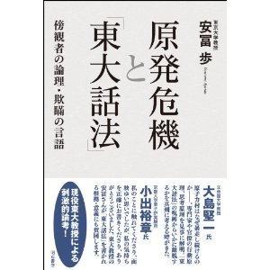

書評コーナー
季刊誌47号より
原発危機と「東大話法」 傍観者の論理・欺瞞の言語
■安冨 歩著／明石書店
■ISBN-10: 4750335169
■ISBN-13: 978-4750335162
■13.5cm x 19.5cm 270頁 価格1600円（税別）
現役の東大教授である著者は、原発事故後の状況を観察し、「現代の日本人と原発の関係は戦前の日本人と戦争との関係によく似ていること」 に気づきます。そして原発問題をめぐる言説を解析し、浮上してきたのが「東大話法」という概念でした。
その規則は20。〝自分の信念ではなく、自分の立場に合わせて思考を採用する〝、 〝自分を傍観者と見なし、発言者を分析してレッテル貼りし、実体化して属性を勝手に設定し、解説する〝、 〝「誤解を恐れずに言えば」と言って嘘をつく〝などです。例を挙げれば、ヤラセ質問で話題となった佐賀県の玄海原発のプルサーマルの討論会で、 大橋弘忠東大教授は「事故の時どうなるかは想定したシナリオに全部依存します」「専門家になればなるほど、格納容器が壊れるなんて思えない」 と発言しています。
よく考えれば、医療の分野にも大橋教授のように「東大話法」を駆使する専門家が多数存在します。 抗がん剤の効果を表す指標である Response Rate は直訳すれば〝反応率〝ですが、これに〝奏効率〝という、 効果の比率を表しているかのような訳を当てたのも欺瞞の一例です。 そんな専門家に騙されないためにも、日本国民必読の１冊。（き）